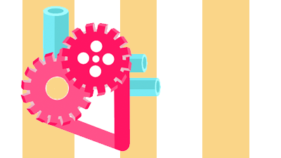

This game was our final project for the Spring 2018 offering of the VR decal. I created the game with Olivia Ting and Jessica Lee. I programmed the particle system.
Process
Our original concept was to create a stress-relieving multiplayer game, which would either leverage Unity or Arduino to implement that functionality. However, as our time came down to the line, we decided to produce a minimal viable product that would be just as amusing, where one person in the audience would repeatedly spawn the flies as the other user would swat flies aside with a heart-shaped pan.
Reflection
Probably the greatest part of this game was the demo, because nothing was more amusing than seeing delighted-slash-horrified by our monstrous stress-relieving game. People would put on the headset and suddenly hear intense buzzing and the spawning of ginormous flies. It was a lovely experience for many attendees of the Spring 2018 Jacobs showcase.
Unity Side Projects
Purpose
Unity has been my newest digital playground, and I have particularly enjoyed experimenting with particle system and establishing pipelines between Unity and Arduino and Unity and Illustrator.
Process
During finals week of Spring 2018, I was sick and tired of doing reductions all day, as beautiful as they are. My mind kept swimming around this vision of rose petals dancing in the wind, so I wanted to see if there was some way I could pull the (x,y) coordinates of what I drew from Illustrator into Unity, so I could animate what was in my imagination. Google came through and showed me this fantastic library. After figuring out how to configure my illustrator sketch to export, I then started messing around on my terminal, writing a JSON cleaning python file to ready my set of points for importing into Unity.
When Unity imported in the points, the particle system I configured would trace them and emit particles at their (x,y) locations. This allowed me to experiment a bit:
Reflection
All I can say is there is still so much I want to try on Unity. I'll admit that I don't love it for its VR affordances--I love it because I can use it to pull 2D art into 3D. For example, I would love to try projection work next.
Dancer, 4th Position (for my Grandpa)
Purpose
A gift for my grandfather, who passed away this summer.
Process
I started off by designing in Fusion 360. In retrospect, this will be the last time I use Fusion 360 for something that is more artistic than functional, because I’ve come to realize Maya is just as suitable and far less rigidly attached to constraints. However, this project allowed me to finally understand how to utilize Fusion 360’s version control system to edit previous sketches. This was very exciting!
My print failed many times, because I initially tried printing vertically rather than horizontally and with the wrong profile configuration. Finally, after soliciting the help of Jacobs supervisor Mary, I got the support to print without offset or further problems. I patiently watched my print until I realized that the spool was running out of filament. This became the happy accident of my project, as Mary taught me how to switch filament rapidly to get a clean transition in color.
Reflection
My mother and my aunt were professional dancers, so I was tossed into dance at a very young age. Throughout my childhood, I showed little promise and quit 3 times while dabbling in a hodgepodge of genres (ballet, jazz, lyrical/contemporary, Chinese folk, hip hop, Zumba). Dance was a pain point for me, and I hid the fact that I danced even though it was a big part of my life (15+ years). Only after my first semester at Berkeley did I begin to reconsider how I felt about dance (amongst other things like calculus and computer science). Berkeley encouraged me to reinvent myself and drop the attitudes I carried towards my past. I became a part of the vibrant dance community, which gave me some of my earliest golden college memories.
Cat
My roots in design trace back to digital art. Some kids played in the sun with sand and balls. I played with pixels, teaching myself Photoshop, Illustrator, and Indesign.
For a year during college, I was a Gold Tier member of Innovative Design, one of Cal's creative communities. Every week, I designed and iterated for on-campus clients. I was exposed to every facet of design here, from marketing to photography, jQuery animation to videography, and Sketch UI to web frameworks.

Ying and Yang
For my Critical Making class, I wanted to produce a 3D realization of one of my old Illustrator designs. The original design, which dedicated to my friend Melissa, looked like this.
My box was to store my electronics. It had an internal compartment that allowed me to slide my breadboard in vertically. The lid was made a dowel and circle spacer, which rotated to open the lid.
As usual, I tried to inform my art with my heritage, so I accented the piece with Asian style clouds and glued koi cuts onto the lid.
I wanted to make a box that was out-of-the-box, so I created a box that was not a box. It was not enclosed, four-sided, or square-lidded in the slightest. Instead it incorporated a helical twist into its structure that embodied the spiralling motion of my ying-yang koi.
I wanted to make something harmonious that would represent my personal goal during Spring 2018--to be balanced.
家
家 is both the character for home and family. I designed this in the style of Chinese papercutting, which is a cultural art form that I would collect when I was a kid. When I look at the swan, the lion, and the flower motifs, I am reminded me that home is where I make it.
Sketches
Purpose
I was never a traditional artist, but I do understand the value of sketching--which is one of the fastest forms of prototyping. I love drawing blueprints, eyes, and flora.
Process
Some strokes, much erasing.
Music Box, Infinity Mirror
Hands
Purpose
There is something that I love about hands. I thought it would be a good challenge for me to brush up on Fusion 360 by modeling a hand. Additive and subtractive geometry--easy.